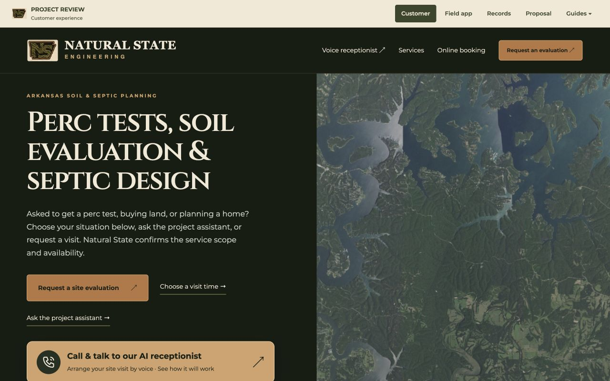
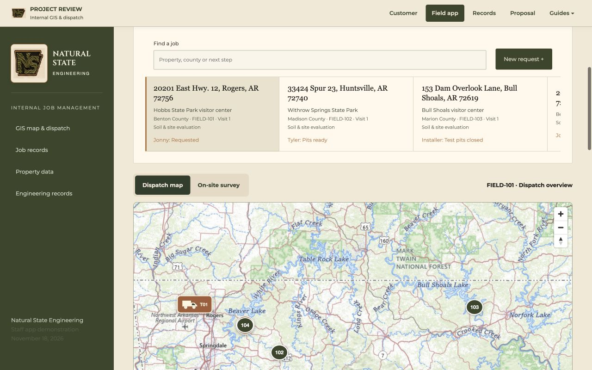

The complete review · Next decisions
Bring the plan
into our first jobs.
Tyler, you’ve now seen the customer experience, the internal operation and the proposed business arrangement. This is the point to work through your questions and agree on a focused first launch.
What I’d like us to decide together.
- Your Engineering services and first assignment scope.
Confirm which services you want to offer, the customer information you need and the field responsibilities, rates and scheduling rules we would use from the first job.
- The first operating workflow.
Choose one representative request and walk it through intake, the map, field handoffs, engineering observations and retained submission evidence. Agree who handles each step.
- How we would work together.
Review the proposed Siteworks arrangement and the two digital-service offers. Agree on contributions, operating responsibilities, initial scope and approved expenses.
- The first production connections.
Prioritize the shared records and archive, then the approved calendar/voice, customer-update and single-truck pilot connections. Hardware and provider costs are chosen explicitly.
The tools stay available while you review.


Proposal terms remain for discussion. The working interfaces and the production connections are labeled throughout the review.